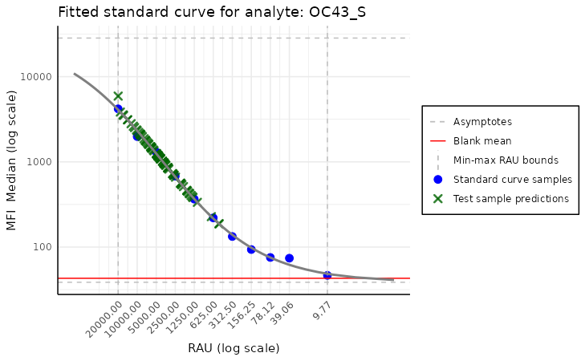

Simple example of basic PvSTATEM package pre-release version functionalities
Tymoteusz Kwieciński
2024-07-18
example_script.RmdIntroduction
The basic functionality of the PvSTATEM package is
reading raw MBA data. To present the package’s functionalities, we use a
sample dataset from the Covid OISE study, which is pre-loaded into the
package. Firsly, let us load the dataset as the plate
object.
library(PvSTATEM)
library(ggplot2)
plate_filepath <- system.file("extdata", "CovidOISExPONTENT_CO.csv", package = "PvSTATEM", mustWork = TRUE) # get the filepath of the csv dataset
layout_filepath <- system.file("extdata", "CovidOISExPONTENT_CO_layout.xlsx", package = "PvSTATEM", mustWork = TRUE)
plate <- read_data(plate_filepath, layout_filepath) # read the data#> Reading MBA plate csv file...
#>
#> (WARNING)
#> The datatype Units contains NA values
#> (WARNING)
#> The datatype Analysis Types contains NA values
#> (NOTE)
#> CRC block found, omiting it for now
#> reading layout file...
#>
#> New plate object has been created with name: !
#>
#> Running consistency checks...
#> (WARNING)
#> Plate contains at least one region that did not reach the specified bead count - 50
cat("Successfully loaded plate with batch name:", plate$batch_name, "\n")#> Successfully loaded plate with batch name: IgG_CovidOise0_amiens_plate2_20211220After the plate is successfully loaded, we can look at some basic information about it.
plate$summary()#> Summary of the plate generated on 12/20/2021 10:50 AM
#> with name 'CovidOISExPONTENT_CO':
#> Total number of samples: 49
#> Number of blank samples: 1
#> Number of standard curve samples: 11
#> Number of positive control samples: 0
#> Number of negative control samples: 0
plate$summary(include_names = TRUE) # more detailed summary - names of the types#> Summary of the plate generated on 12/20/2021 10:50 AM
#> with name 'CovidOISExPONTENT_CO':
#> Total number of samples: 49
#> Number of blank samples: 1
#> Number of standard curve samples: 11
#> Sample names: '1/50', '1/100', '1/200', '1/400', '1/800', '1/1600', '1/3200', '1/6400', '1/12800', '1/25600', '1/102400'
#> Number of positive control samples: 0
#> Number of negative control samples: 0
plate$get_sample(1)#> A sample B with ID: 1
#> Sample Type: BLANK
#> Sample Location: (A, 1)
plate$get_sample_by_type("STANDARD CURVE")[[1]]#> A sample 1/50 with ID: 2
#> Sample Type: STANDARD CURVE
#> Dilution Factor: 1/50
#> Sample Location: (A, 2)
plate$sample_names#> [1] "B" "1/50" "1/100" "1/200" "1/400" "1/800"
#> [7] "1/1600" "1/3200" "1/6400" "1/12800" "1/25600" "1/102400"
#> [13] "K086-LM" "M254-VM" "M199-DS" "M164-LM" "M265-MM" "K026-DJ"
#> [19] "K137-DT" "M255-VA" "M258-PA" "M188-VC" "M270-BF" "M050-EL"
#> [25] "M088-GE" "M259-PM" "K101-PA" "M189-VY" "K018-FC" "M142-RA"
#> [31] "K100-CC" "K107-RP" "M240-HS" "K019-FM" "M148-PS" "M089-HG"
#> [37] "K136-DA" "M241-HR" "K020-NA" "M239-HJ" "M092-LS" "M162-PE"
#> [43] "M260-PM" "K021-FS" "M253-VM" "M198-CN" "M163-PD" "M264-MA"
#> [49] "K024-DT"
plate$analyte_names#> [1] "Spike_6P_IPP" "ME_NA" "HKU1_S_IPP" "OC43_NP_NA"
#> [5] "OC43_S_sino" "HKU1_NP_NA" "229E_NP_NA" "Mumps_NP"
#> [9] "RBD_B16171_IPP" "NL63_NP_NA" "RBD_B16172_IPP" "RBD_wuhan_IPP"
#> [13] "NL63_S_NA" "229E_S_NA" "Spike_B16172_IPP" "Spike_B117_IPP"
#> [17] "Measles_NP_NA" "Ade5_NA" "NP_IPP" "Spike_P1_IPP"
#> [21] "Rub_NA" "Ade40_NA" "RBD_B117_IPP" "Spike_B1351_IPP"
#> [25] "FluA_NA" "RBD_B1351_IPP" "RBD_P15_IPP" "S2_NA"Warnings
Our scripts are designed to catch potential errors in the data. If
there are any warnings, they will be stored in the warnings
field of the plate object. The warnings can be accessed by the
$warnings field of the plate object or by the
$warnings field of the sample object.
## warnings ----------------------------------------------------------------
plate$warnings[[5]]#> [[1]]
#> [1] "An analyte Measles_NP_NA did not reach the specified count in the given sample"
plate$get_sample(5)$warnings#> [[1]]
#> [1] "An analyte Measles_NP_NA did not reach the specified count in the given sample"
plate$get(analyte = "Spike_6P_IPP", sample = 1)#> Spike_6P_IPP
#> Median 19.00
#> Net MFI 19.00
#> Count 73.00
#> Avg Net MFI 19.00
#> Mean 19.71
#> %CV 39.71
#> Peak 22.00
#> Std Dev 7.83
#> Trimmed Count 65.00
#> Trimmed Mean 19.35
#> Trimmed % CV of Microspheres 33.08
#> Trimmed Peak 22.00
#> Trimmed Standard Deviation 6.40
#> Acquisition Time NA
plate$get_sample_by_type("STANDARD CURVE")[[1]]$warnings#> [[1]]
#> [1] "An analyte Spike_6P_IPP did not reach the specified count in the given sample"
#>
#> [[2]]
#> [1] "An analyte ME_NA did not reach the specified count in the given sample"
#>
#> [[3]]
#> [1] "An analyte Mumps_NP did not reach the specified count in the given sample"Normalization
The package can plot the dilutions along the MFI values, allowing manual inspecting of the standard curve. This method raises a warning in case the MFI values were not adjusted using the blank samples.
plot_standard_curve_antibody(plate, antibody_name = "Spike_6P_IPP")#> (WARNING)
#> Blank values not adjusted - Consider adjusting the blank values using function `plate$blank_adjustment`
plate$blank_adjustment()
plot_standard_curve_antibody(plate, antibody_name = "Spike_6P_IPP")
We can also plot the standard curve for different analytes and data
types. A list of all available analytes on the plate can be accessed
using the command plate$analyte_names.
By default, all the operations are performed on the
Median value of the samples; this option can be selected
from the data_type parameter of the function.
plot_standard_curve_antibody(plate, antibody_name = "RBD_wuhan_IPP", data_type = "Mean")
plot_standard_curve_antibody(plate, antibody_name = "RBD_wuhan_IPP", data_type = "Avg Net MFI")
The plotting function has more options, such as selecting which axis
the log scale should be applied or reversing the curve. More detailed
information can be found in the function documentation, accessed by
executing the command ?plot_standard_curve_antibody.
After inspection, we may create the model for the standard curve of a
certain antibody. The model is now fitted using the nplr
package, which provides a simple interface for fitting n-parameter
logistic regression models. The model is then used to predict the
dilutions of the samples based on the MFI values.
nplr package fits the model using the formula:
Where:
is the predicted value, MFI in our case,
is the independent variable, dilution in our case,
is the bottom plateau - the right horizontal asymptote,
is the top plateau - the left horizontal asymptote,
is the slope of the curve at the inflection point,
is x-coordinate at the inflection point,
is the asymmetric coefficient.
This equation is referred to as the Richards’ equation. More
information about the model can be found in the nplr
package documentation.
By default, the nplr model transforms the x values using
the log10 function.
model <- create_standard_curve_model_antibody(plate, antibody_name = "Spike_6P_IPP")
model#> Instance of class nplr
#>
#> Call:
#> nplr::nplr(x = dilutions_numeric, y = curve_values, npars = npars,
#> silent = !verbose)
#>
#> 5-P logistic model
#> Bottom asymptote: -625.7558
#> Top asymptote: 11718.6
#> Inflexion point at (x, y): -1.913257 10401.91
#> Goodness of fit: 0.98885
#> Weighted Goodness of fit: 0.9994871
#> Standard error: 481.0985 309.5375Since our model object is an instance of
nplr class, it contains all the information about the
fitted model. The model can be used to predict the dilutions of the
samples based on the MFI values. The output above shows goodness of the
fit, the estimated parameters and the confidence intervals for the
parameters.
The predicted values may be used to plot the standard curve, which can be compared to the sample values.
plot_standard_curve_antibody_with_model(plate, antibody_name = "Spike_6P_IPP", model)
plot_standard_curve_antibody_with_model(plate, antibody_name = "Spike_6P_IPP", model, log_scale = c("dilutions"))
Apart from the plotting, the package can predict values of all the samples on the plate.
predicted_values <- predict_dilutions(plate, antibody_name = "Spike_6P_IPP", model)
head(predicted_values)#> Location Sample MFI dilution
#> 1 (A, 1) B 19.0 9.147037e-05
#> 2 (A, 2) 1/50 12703.5 2.000000e-02
#> 3 (A, 3) 1/100 9144.5 9.894250e-03
#> 4 (A, 4) 1/200 6716.0 6.046758e-03
#> 5 (A, 5) 1/400 3491.0 2.231589e-03
#> 6 (A, 6) 1/800 2258.0 1.208470e-03We can add this values onto the plot, to check if the predictions are valid and lay in the central part of the plot, not on the sides of the curve.
p <- plot_standard_curve_antibody_with_model(plate, antibody_name = "Spike_6P_IPP", model, log_scale = c("dilutions"))
p <- p + theme(legend.position = "none") # remove the legend
p + geom_point(data = predicted_values, aes(x = log(dilution), y = MFI), color = "blue")
The new predicted values are marked with blue points. As we can see, the predictions are in the central part of the curve, which means that the model is valid. There are some outlier points above the asymptote, and their dilution is set to the maximum dilution value.
Four parameters model
model_4npars <- create_standard_curve_model_antibody(plate, antibody_name = "Spike_6P_IPP", npars = 4)
model_4npars#> Instance of class nplr
#>
#> Call:
#> nplr::nplr(x = dilutions_numeric, y = curve_values, npars = npars,
#> silent = !verbose)
#>
#> 4-P logistic model
#> Bottom asymptote: 2.004674
#> Top asymptote: 20470.69
#> Inflexion point at (x, y): -1.922218 10236.35
#> Goodness of fit: 0.9979216
#> Weighted Goodness of fit: 0.9999733
#> Standard error: 207.7096 70.60592As seen from the model’s output, it has a better fit than the five-parameters model. Let’s investigate the plot of the standard curve with the four-parameters model.
p <- plot_standard_curve_antibody_with_model(plate, antibody_name = "Spike_6P_IPP", model_4npars, log_scale = c("dilutions"))
predicted_values_4npars <- predict_dilutions(plate, antibody_name = "Spike_6P_IPP", model_4npars)
p <- p + theme(legend.position = "none") # remove the legend
p + geom_point(data = predicted_values_4npars, aes(x = log(dilution), y = MFI), color = "blue")
We can see that even though the model supposedly has a better goodness of fit, extrapolation in the data is not desired. We need to control how the predictions are done and avoid bad practices, such as extrapolation. This is the main goal for the work in the following days